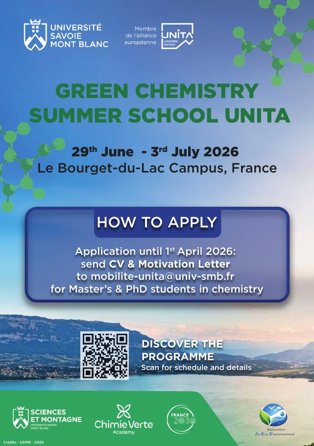

Affiche - Green Chemistry Summer School UNITA

Contexte
Création de l'affiche de la Green Chemistry Summer School UNITA, une école d'été de chimie verte qui se tient du 29 juin au 3 juillet 2026 sur le campus du Bourget-du-Lac. Elle s'adresse aux étudiants de Master et de doctorat en chimie, dans le cadre de l'Université Savoie Mont Blanc et de l'alliance européenne UNITA.
Compétences mobilisées
Création graphique, mise en page, hiérarchisation de l'information, intégration de logos partenaires, communication événementielle.
Le projet en détail
L'affiche devait donner envie de candidater tout en restant claire sur les informations essentielles : le nom de l'événement, les dates, le lieu, la date limite de candidature et la marche à suivre pour postuler. [Précisez ici votre rôle exact : conception complète, ou adaptation d'une charte existante ?]
Identité visuelle. Le visuel s'appuie sur un paysage de lac et de montagnes pour ancrer l'événement dans son territoire, associé à des motifs de molécules vertes qui évoquent directement la chimie. Le vert, couleur dominante des titres, renvoie à la chimie verte et au thème de l'événement.
Hiérarchie de l'information. Le titre est le premier élément lu, suivi des dates et du lieu. L'encadré « How to apply » regroupe les informations pratiques (date limite du 1er avril 2026, documents à envoyer, adresse de contact) sur un fond contrasté pour qu'il ressorte. Un QR code permet d'accéder directement au programme détaillé.
Partenaires. Le bandeau en bas de l'affiche réunit les logos des partenaires (Université Savoie Mont Blanc, Sciences et Montagne, Chimie Verte Academy, France 2030, Association Air Eau Environnement), intégrés de façon lisible sans surcharger la composition.